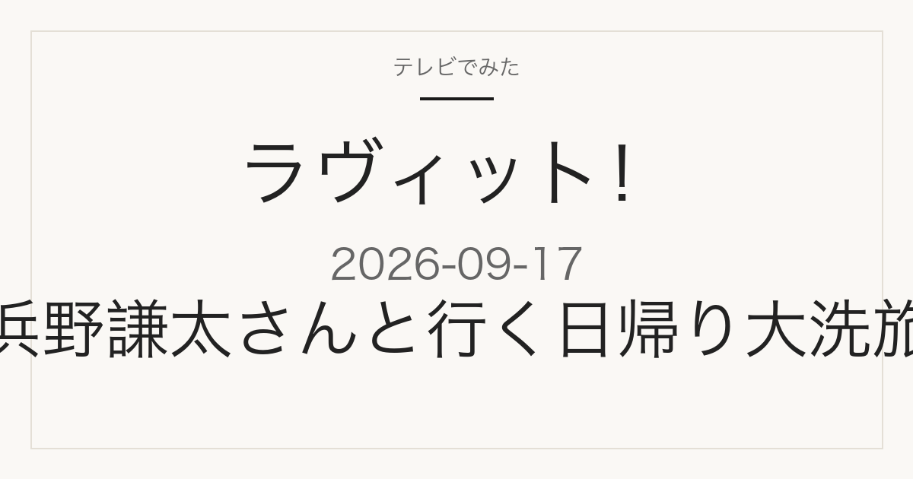

この記事には広告・アフィリエイトリンクが含まれる場合があります。
2026年9月17日（木）放送
ラヴィット！
浜野謙太さんと行く日帰り大洗旅
連休にオススメの茨城・大洗を日帰りで巡る企画が予定
これは放送前の記事です。番組表で確認できた内容だけを載せています。店名・商品名・価格はまだ発表されていません。放送後、確認できたものから同じページに追記します。
紹介予定の内容を見る
特集概要
2つの企画が予定されています
店名・商品名は未発表
この回は2つの企画が予定されています。店名・商品名・価格はいずれも番組表に記載がありません。
- 浜野謙太さんの日帰り大洗旅 — 「仲良くなりたい！」を掲げ、連休にオススメの茨城・大洗を日帰りで巡ります。この回でいちばんお店が出そうな企画です
- 新常識Ｑ — 番組の名物クイズ企画です
出典は2026年9月17日のTBS番組表 8時枠（2026年9月16日確認）です。番組内容は変更になる場合があります。
見たあとに
気になった大洗のお店を探すには
大洗旅で紹介されるお店は、店名さえ分かればあとから調べて訪ねやすいものがほとんどです。ただ放送中は店名が一瞬で流れてしまい、あとから思い出せないことがよくあります。
このページは同じURLのまま更新します。放送を見ながらブックマークしておけば、あとで店名・商品名・場所を確認できます。
載せるのは、番組公式かお店の公式情報で確認できたものだけです。SNSの投稿だけを根拠にした断定はしません。
出典
当サイトは番組公式サイトではありません。放送内容は変更になる場合があります。